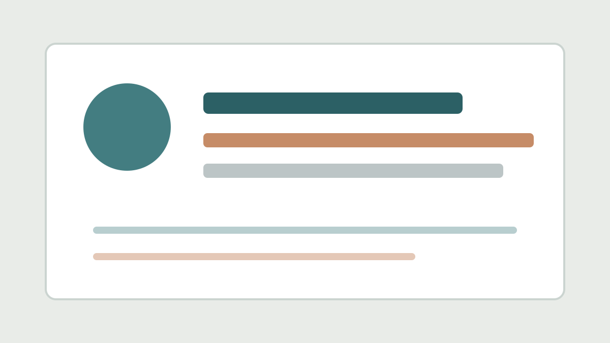

P0
Featured paper title
One-sentence reason this paper should be read first.
Open detailsLatest issue
A curated paper digest for a configured research topic.
P0
One-sentence reason this paper should be read first.
Open details
Add links to previous issues or generated catalog pages here.